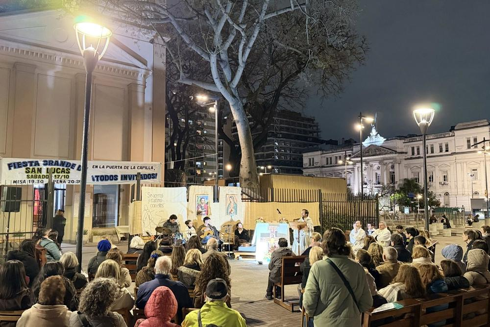
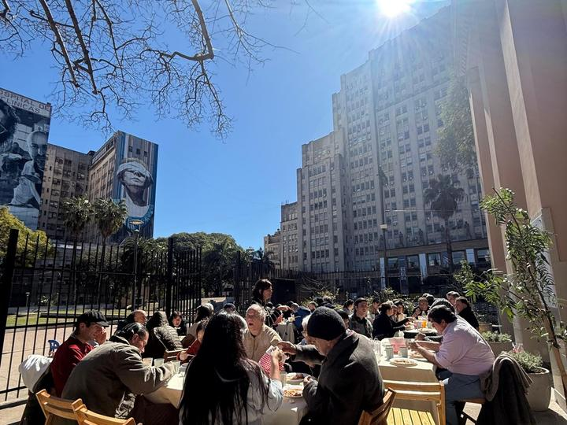
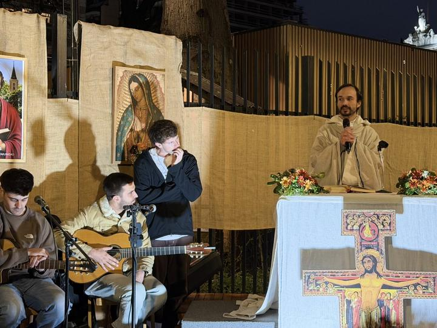
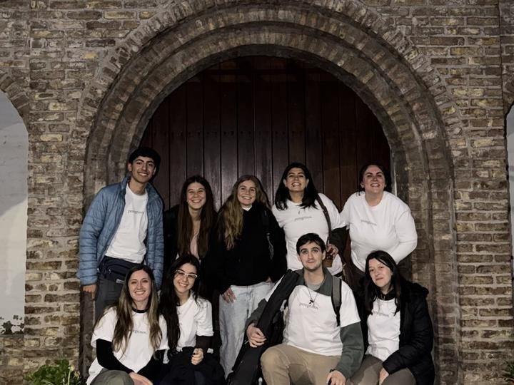

Casa de oração
Onde os sedentos encontrem a água viva de Deus, na beleza da nossa capela silenciosa e no calor das nossas celebrações.
caminhamos juntos
Uma capela de jovens no meio da cidade.
quem somos
150 anos
Somos uma pequena capela de 150 anos localizada no centro da Plaza Houssay, em meio a numerosas universidades: as faculdades de Medicina, Economia, Farmácia e Odontologia da Universidade de Buenos Aires, entre muitas outras.
Fomos sonhados especialmente para acompanhar a multidão de jovens que por aqui estudam, trabalham, buscam, peregrinam… servindo-os rumo ao encontro com Deus e com o seu Reino de alegria e caridade.
Pertencemos à Arquidiocese de Buenos Aires como paróquia pessoal: uma comunidade constituída não por um território delimitado, mas por um âmbito pastoral personalizado — no nosso caso, o juvenil.

nossa missão
Apaixonados por Jesus, buscamos viver juntos a sua Boa Notícia no meio da cidade
Onde os sedentos encontrem a água viva de Deus, na beleza da nossa capela silenciosa e no calor das nossas celebrações.
Impulsionados a partilhar a alegria da fé em Jesus, aprendendo a servir generosamente na realidade concreta de cada um.
Servimos os jovens de modo preferencial, mas não exclusivo: uma família missionária junto com crianças, adultos e idosos, cuja fé rejuvenescida todos desfrutamos.
nossos valores
Gostamos de cuidar e transmitir em tudo o que fazemos um espírito criativo, profundo e misericordioso.
Convencidos de que Deus é sempre novo e de que Ele faz novas todas as coisas, nos animamos a renovar estruturas, estilos e linguagens para testemunhar uma Igreja mais viva e um Evangelho mais próximo.
Porque não podemos calar o que vimos e ouvimos, nos animamos a um vínculo muito profundo com Deus e com os outros, cultivando a interioridade e a fraternidade acima da indiferença e da superficialidade.
O amor de Deus sempre dá o primeiro passo. Assim tentamos amar como Ele, colocando-nos a serviço de todos, especialmente dos jovens e dos pobres, entregando-nos na santidade de cada dia e nos que mais sofrem.
caminhamos juntos
Pensamos nossas atividades a partir das quatro dimensões vitais da Igreja.


Vivemos juntos a Semana Santa como jovens de 20 a 30 anos.
Abril
Um curso para dar os primeiros passos na fé.
Abril a junho
Um curso em três etapas para amadurecer na fé. Também prepara para a Crisma.
Três etapas
Tarde de missão na Plaza Houssay.
Plaza Houssay
Grupos de vida para partilhar a fé, a vida e o caminho de cada um. Entre eles, Andes, para universitários de 18 a 22 anos.
Andes: a cada duas terças-feiras
Retiros para jovens e para todos.
Jovens: primeiro fim de semana de novembro



Partilhamos a mesa com irmãos em situação de rua.
Sábados ao meio-dia
Missão num centro de detenção de menores, para partilhar a fé e acompanhar de perto.
A cada dois sábados
Trabalhos de jardinagem e manutenção na capela.
Espaço para jovens de 23 a 30 anos que queiram missionar de um jeito diferente e maduro.
Fevereiro



De terça a domingo às 12.15 (exceto aos sábados) e às 19.30.
Ver horáriosAdoração eucarística e confissões de terça a domingo.
Ver horáriosTodo mês celebramos o nosso santo jovem com uma bênção especial.
Todo dia 12
Espaço de louvor.
Segunda sexta-feira de cada mês (salvo exceções)



Diferentes encontros que nos permitem conhecer-nos melhor e partilhar a alegria de ser comunidade. Propostas que transformam a solidão existencial em vínculos sólidos.
Uma missa mais tranquila e um jantar para partilhar juntos e continuar sonhando a nossa capela.
Última quarta-feira de cada mês
Pequenas comunidades para crescer na amizade e na fé.
Caminhamos juntos, impulsionados pela oração e pela fraternidade.
Batismos
[Completar: datas e encontros de preparação]
Crisma
A preparação é feita no curso Buscando el fuego (Buscando o fogo).
Casamentos
[Completar: requisitos e antecedência]
esperamos você
Missas, adoração eucarística, confissões e capela aberta.
Segunda-feiraA capela permanece fechada.
Dia de Carlo AcutisTodo dia 12, nas missas das 12.15 e das 19.30, com bênção especial.
Secretaria paroquialHorário: [completar]. Batismos, casamentos, certidões e dúvidas.